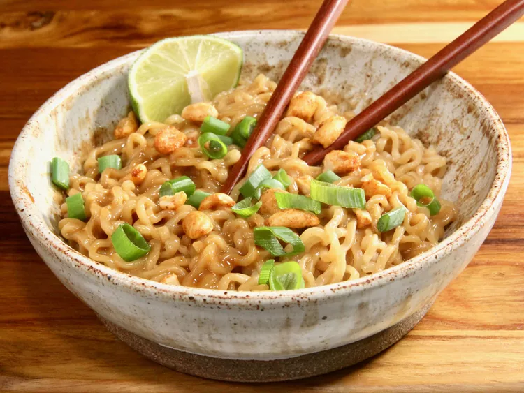

Home
Thai Peanut Butter Ramen Recipe

Description
This Thai peanut butter ramen is one unique way to customize and style up ramen noodles. This quick, satisfying meal is packed with tangy peanut butter flavor and has a spicy kick.
Ingredients
- 2 packages of instant ramen noodles, seasoning packets discarded
- 1/4 cup creamy peanut butter
- 3 tablespoons reduced-sodium soy sauce
- 1 1/2 tablespoons honey
- 1 tablespoon Sriracha, or to taste
- 2 teaspoons sesame oil
- 2 green onions, thinly sliced
- 2 tablespoons chopped peanuts
- 3 fresh lime wedges
Steps
- Step 1:
Bring a large pot of water to a boil over high heat. Add noodles, and cook to desired doneness, 3 to 5 minutes.
- Step 2:
Add peanut butter, soy sauce, honey, sriracha, and sesame oil to a large bowl, and whisk until smooth.
- Step 3:
Reserve 1/2 cup pasta water. Drain ramen noodles well, and immediately add them to peanut butter sauce, tossing until noodles are well-coated.
If you prefer thinner sauce, add reserved pasta water, 1 tablespoon at a time, to thin.
- Step 4:Divide into bowls, garnish with green onions, peanuts, and lime wedges for squeezing over each serving, and serve immediately.